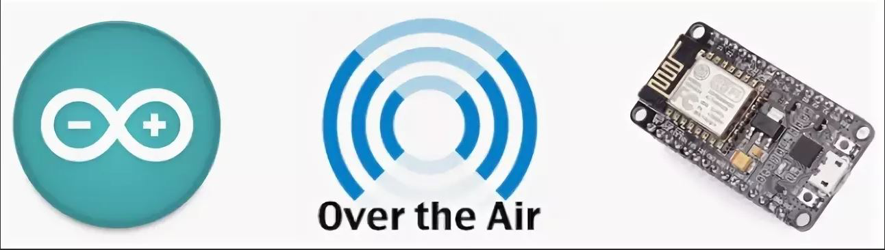
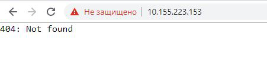
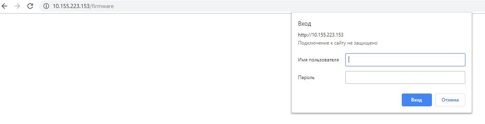
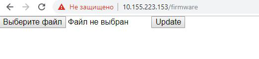
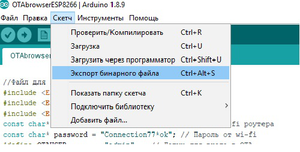

Прошивка по воздуху контроллера
esp8266 v2.0
23 мая, 2019

Здравствуйте, в этой статье мы разберем OTA прошивку esp8266 (ну или говорят простым языком, прошивку по воздуху). В этой статье я уже разбирал прошивку по воздуху, но тогда нам нужно было еще установить программу python на компьютер и прошивалось это все по ip адресу. В этом же примере я думаю все будет гораздо проще, мы будем заливать новую прошивку в esp8266 через веб интерфейс. Так же у некоторых людей не получалось повторить первый способ, но с этим способом прошивки я думаю справится большинство.
Прежде чем приступить к материалу, я Вас попрошу, если нравится то, что я делаю и хотите следить за моей деятельностью, то рекомендую подписаться на мой телеграмм канал: https://t.me/ypavla
Там я публикую новости о вышедших видео, статьях и разные устройства для умного дома и не только показываю.
Спасибо за внимание, теперь продолжим.
Итак в принципе нам ничего не понадобится, кроме самого контроллера ESP8266, на картинке и в видео ниже, используется контроллер NodeMCU его можно приобрести здесь: http://ali.pub/3dpnvb
Но я его использую из-за удобства подключения, для тестов. Для окончательных проектов мне больше нравятся контроллеры wemos d1 они по функционалу такие-же, но в 2 раза меньше и их легче можно спрятать в какой нибудь корпус. Купить wemos d1 можно здесь: http://ali.pub/3dpoub
Я думаю если вы попали на данную статью, то уже знакомы с esp8266 и определились с ее реализацией.
Программу которую я покажу сейчас, придумал не я, ее нашел на просторах интернета мой подписчик Дамир Салахов. Он перепробовал много способов прошивки ESP по воздуху, но пришел к выводу, что данный способ самый лучший.
Саму программу ОТА можно скачать здесь: https://yadi.sk/d/Kt2JRijJ2wclwg
zerocoder.ru
РЕКЛАМА•16+
В чем российские нейросети обходят зарубежный ChatGPT
ideav.online
РЕКЛАМА
Программа для программирования
Итак как я уже говорил ранее, принцип работы здесь такой, что мы заходим по веб интерфейсу и заливаем прошивку уже через него.
Для начала давайте посмотрим на саму программу:
|
2 3 4 5 6 7 8 9 10 11 12 13 14 15 16 17 18 19 20 21 22 23 24 25 26 27 28 29 30 31 32 |
//Файл для загрузки должен иметь расширение *.bin #include <ESP8266WiFi.h> #include <ESP8266WebServer.h> #include <ESP8266HTTPUpdateServer.h> const char* ssid = "TechSUP_2Gz"; // SSID wi-fi роутера const char* password = "Connection77*ok"; // Пароль от wi-fi #define OTAUSER "admin" // Логин для входа в OTA #define OTAPASSWORD "admin" // Пароль для входа в ОТА #define OTAPATH "/firmware"// Путь, который будем дописывать после ip адреса в браузере. #define SERVERPORT 80 // Порт для входа, он стандартный 80 это порт http ESP8266WebServer HttpServer(SERVERPORT); ESP8266HTTPUpdateServer httpUpdater; //----------------------------------------------------------------- void setup(void) { WiFi.begin(ssid, password); /* Ждем подключения к Wifi */ while (WiFi.status() != WL_CONNECTED) { delay(1000); } httpUpdater.setup(&HttpServer, OTAPATH, OTAUSER, OTAPASSWORD); HttpServer.onNotFound(handleNotFound); HttpServer.begin();
} void loop(void) { HttpServer.handleClient(); // Прослушивание HTTP-запросов от клиентов
} /* Выводить надпись, если такой страницы ненайдено */ void handleNotFound() { HttpServer.send(404, "text/plain", "404: Not found"); } |
Здесь нас интересуют вот эти параметры:
|
2 3 4 5 6 |
const char* ssid = "TechSUP_2Gz"; // SSID wi-fi роутера const char* password = "Connection77*ok"; // Пароль от wi-fi #define OTAUSER "admin" // Логин для входа в OTA #define OTAPASSWORD "admin" // Пароль для входа в ОТА #define OTAPATH "/firmware"// Путь, который будем дописывать после ip адреса в браузере. #define SERVERPORT 80 // Порт для входа, он стандартный 80 это порт http |
Я конечно их описал в комментариях к коду и думаю еще раз не стоит это все описывать.
После заливки скетча в контроллер переходим по ip адресу и видим следующее окно:

Это окно выскакивает, если мы ввели не существующую страницу. Как было описано в комментариях к коду, чтоб открыть страницу для прошивки, нужно ввести следующее:
http://ipадрес/firmware – где /firmware это путь который мы указываем в define OTAPATH
После ввода правильного пути у нас выскочит окно ввода логина и пароля:

Как указали в скетче, логин: admin пароль: admin
После ввода верных логина и пароля, нас перенесет в следующее окно, уже непосредственно в котором будем выбирать файл для прошивки:

Тут остановимся по подробнее, дело в том, что файлы с расширением .ino данным способом не загрузить в контроллер. Загрузить сможем только бинарный файл (двоичный) расширения .bin . На самом деле, тут ничего нет сложного, так как программа для программирования arduino ide умеет преобразовывать скетчи в формат .bin , для этого нам нужно открыть скетч, который мы хотим залить, выбрать пункты в программе arduini ide: ” Скетч->Экспорт бинарного файла” и файл с расширением .bin сохранится в туже папку где и находится файл .ino данного скетча. Выглядит это все таким образом:

После того как мы сохранили .bin файл его теперь можем выбрать в web интерфейсе и загрузить в наш контроллер esp8266.
Еще такой момент, если хотите чтоб скетч снова можно было залить после заливки файла .bin нужно в вашем новом скетче оставить код который предназначен для OTA. Иными словами Вы берете тело скетча OTA и добавляете туда уже свой код, оставляя OTA код. Тогда вы в любой момент можете подключиться по ip адресу и залить новый скетч.
В видео, которое добавлено ниже, я постарался подробно об этом рассказать и показать. И там еще показал примеры, как можно залить новый скетч отредактированный из тела OTA скетча. Извиняюсь за тавтологию, надеюсь вы меня поняли.
Видео: